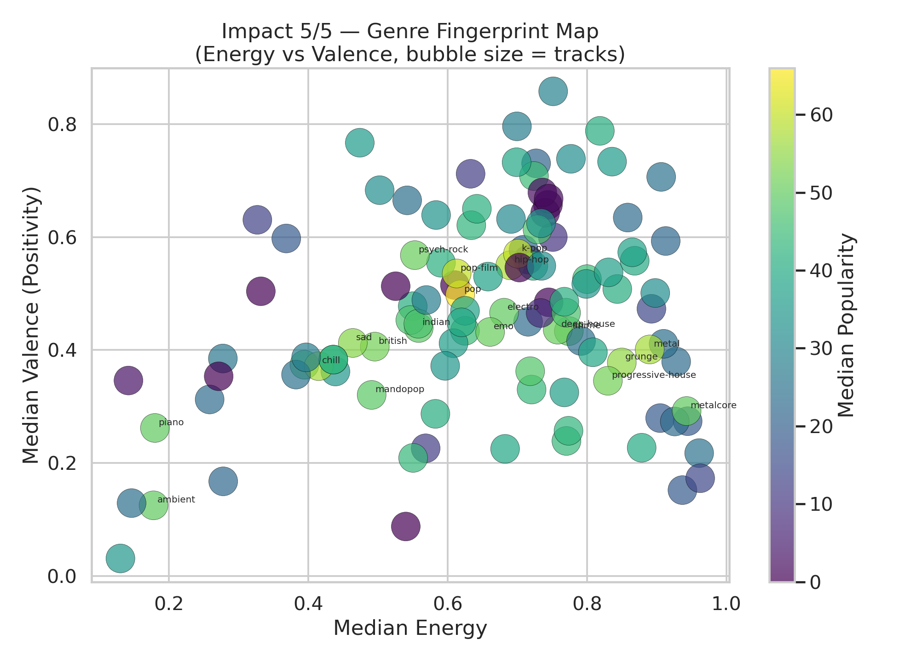

Impact 5 / 5
Genre fingerprint map
The clearest pattern in the project comes from the mood-position view of genres. Popularity clusters are easier to interpret when genre is mapped through energy and valence together rather than treated as a simple label list.
- Among top-20 genres by median popularity, 30.0% fall in the high-energy, high-valence quadrant.
- This suggests that upbeat, emotionally positive genre profiles often align with stronger popularity outcomes.
- Genre works best here as a positioning signal, not just a category tag.
